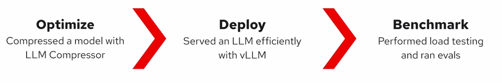

1
总揽
本课程主线可以概括为一条 LLM 推理落地链路：

| 阶段 | 核心问题 | 工具 | 结果 |
|---|---|---|---|
| Optimize | 模型能不能更小？ | LLM Compressor | GPTQ W4A16 量化模型 |
| Deploy | 模型能不能高效服务？ | vLLM | OpenAI-compatible 推理服务 |
| Benchmark | 部署值不值得上线？ | GuideLLM + lm_eval | 性能与质量证据 |
一句话总结：
先用量化降低模型成本，再用 vLLM 提升服务效率，最后用 benchmark 判断性能收益和质量损失是否值得。
课程链接：https://www.deeplearning.ai/courses/fast-and-efficient-llm-inference-with-vllm
2
Optimize
目标：压缩模型，降低部署成本。
BF16 原始模型→GPTQ 校准→W4A16 量化模型→大小下降质量小幅损失
核心内容
- 使用
llm-compressor的oneshot做训练后量化。 - 使用
GPTQModifier，配置为W4A16。 - 主要量化
Linear层，保留lm_head高精度。 - 使用 WikiText-2 作为 calibration dataset。
关键结果
| 指标 | 原始模型 | W4A16 量化模型 |
|---|---|---|
| 模型大小 | 1.41 GB | 528.7 MB |
| Perplexity | 32.80 | 35.18 |
| 变化 | — | 大小减少约 64%，PPL 上升约 7.2% |
结论
W4A16 用可控质量损失换取显著模型压缩，是 LLM 部署中常见的实用折中。
3
Deploy
目标：把模型变成可高效访问的推理服务。
模型→vLLM Server→OpenAI APIMetricsKV Cache 优化
核心内容
- 使用
vllm serve启动模型服务。 - 通过 OpenAI-compatible API 调用本地模型。
- 使用
/metrics观察服务状态。 - 理解 vLLM 的三类关键优化：
- Continuous batching：token 级动态调度，提高吞吐。
- PagedAttention：块化管理 KV cache，减少显存碎片。
- Prefix caching：复用共享 prompt 的 KV cache，减少重复 prefill。
重点概念
| 机制 | 解决的问题 |
|---|---|
| Continuous batching | 请求长度不一导致的 GPU 空等 |
| PagedAttention | KV cache 显存碎片和浪费 |
| Prefix caching | 多请求共享前缀的重复计算 |
| Thinking mode | 质量提升与 token/延迟成本权衡 |
结论
vLLM 的价值不只是“跑模型”，而是把模型变成面向并发请求的高效推理服务。
4
Benchmark
目标：判断部署是否真的值得。
vLLM 服务→GuideLLM性能lm_eval质量Model Card公开评测→部署决策
核心内容
- 用 GuideLLM 测部署性能。
- 用 lm_eval 测模型任务质量。
- 参考 model card 中的公开 benchmark 和 recovery。
关键指标
| 工具 | 衡量内容 | 典型指标 |
|---|---|---|
| GuideLLM | 服务性能 | TTFT、ITL、E2E latency、tokens/s |
| lm_eval | 模型质量 | Hellaswag accuracy 等 |
| Model card | 量化损失 | Recovery、各任务分数 |
评估重点
- 不只看平均延迟，要看 p95 / p99。
- 不只看吞吐，也要看质量是否下降过多。
- 不同任务对量化敏感度不同，数学、代码、复杂推理通常更敏感。
部署判断
好的量化部署不是单纯“更快”或“更小”，而是在延迟、吞吐、显存、成本和准确率之间取得可接受平衡。
✓
最终总结
Optimize压缩模型→Deploy高效服务→Benchmark验证价值→是否值得部署?是：上线/灰度否：调整量化方案或服务配置
LLM 推理优化不是单点技术，而是一条完整链路：
先压缩模型，再高效服务，最后用性能和质量指标验证是否值得部署。